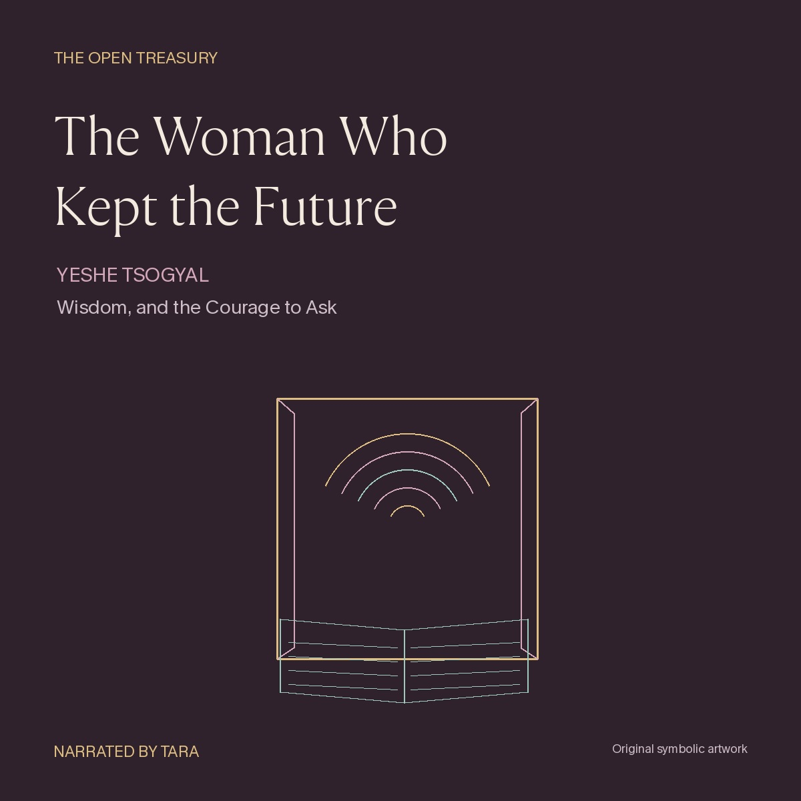

The Woman Who Kept the Future
Yeshe Tsogyal, Wisdom, and the Courage to Ask
A 24-chapter original course on Yeshe Tsogyal: active receiving, questions, female authority, devotion and refusal, Mandarava, treasure, mediated voices, compassion, dakini imagery and keeping the future open.
Moving visual edition
Watch or download the original 720p symbolic animation
Chapters
- 00:00 - A Question Changes the Room
- 02:13 - The Person, the Lives, and the Living Presence
- 04:32 - The Life She Was Supposed to Want
- 06:48 - Receiving Is an Activity
- 09:01 - The Price of Being Allowed to Learn
- 11:16 - A Teaching for an Actual Life
- 13:38 - Could This Go Wrong?
- 15:46 - The Memory That Belongs to the Future
- 17:56 - Devotion Without Disappearing
- 20:06 - What the Word Consort Conceals
- 22:27 - The Authority to Refuse
- 25:03 - A Story Survivors Do Not Have to Imitate
- 27:13 - Austerity Is Not a Competition
- 29:27 - When Two Women Meet
- 31:43 - After the Master Leaves
- 33:51 - A Secret Is Not the Same as Enforced Silence
- 36:02 - Someone Who Has Not Been Born Yet
- 38:11 - Whose Voice Are We Hearing?
- 40:25 - Compassion Beyond the Pleasing Story
- 42:32 - Mother Without a Compulsory Life
- 44:50 - The Sky-Goer Is Not Our Projection
- 47:14 - How Would We Recognize Wisdom?
- 49:30 - The Women Who Keep the Pages
- 51:50 - Keep the Future Open
Read alongside the course
Source companion PDF
Detailed sources and reading limits
Complete spoken script
Rights, narration and review
A questioner near the door opens a study of active receiving, women's access to learning, the authority to refuse, the meeting with Mandarava, teaching after the master's departure, treasure, mediated voices, compassion, dakini imagery and women's work preserving texts. Later sacred lives are distinguished from imperial evidence and from the figure's living religious presence.
The complete official Liang dissertation was obtained, but only the sections named in the source companion were read. Complete short traditional prayers and a short life, an encyclopedia entry, selected Golden Garland dialogue and modern scholarship form the other main sources. No full reading of the commercial biographies or the Tibetan corpus is claimed. Translation variants, uncertain attributions and partial coverage are disclosed. Everyday scenes and ethical applications are original commentary, not ancient quotations.
Chapter 12 discusses sexual violence non-graphically and may be skipped. No survivor owes an assailant forgiveness, access or spiritual instruction. No listener is asked to imitate hardship or remain in an unsafe relationship. This course is study and reflection, not initiation, clinical advice or a manual for advanced tantric, sexual, subtle-energy, breath, gaze or visualization practices.
Synthetic narration uses approximate English pronunciations of specialist names. All 48 clips received automated wording and signal checks, with targeted independent second recognition of 20 uncertain clips and two complete retakes. Retakes 22 and 31 are selected as whole takes. Minor function-word or inflection variation may remain, including can/could in clip 16. No full human-ear or native-pronunciation certification is claimed.
The listening copy uses fixed +3 dB gain and transparent oversampled peak limiting only, without changes to words, speed, pitch or EQ. Untouched original and alternate takes, exact whole-take PCM assembly and an untouched lossless master are retained. Final MP3 measures -17.6 LUFS and -1.8 dBTP. The 720p video uses original symbolic illustrations, not historical likenesses or source art. Chapter-card changes may differ by a small accumulated fraction of a second from the continuous audio because of frame rounding.
Original commentary, synthetic narration and original symbolic artwork are offered under CC0 only insofar as the creator holds rights. Source translations and scholarship retain their own rights and are not placed under CC0. Lotsawa House translations are CC BY-NC 4.0. No source translation or dissertation is recited or redistributed. No support, donation or commercial solicitation accompanies this course. The companion provides translator credits, source links and exact reading limits.
Got a question? Ask Tara - the best listener questions become short answer episodes.
Searchable transcript
Auto-generated pilot, 21 November 2026. This is a selection of ten courses, not a top-ten listening chart. Open-source Whisper recognition, with term-spelling checks and targeted rechecks. Timestamps are approximate. [?] marks a reading to check against the audio before quoting. This is not a certified verbatim transcript or a new translation.
Text · WebVTT · Corrections and uncertainties · Prepared script · Source credits and rights
The source and translator rights stated for this episode apply here too. No new blanket CC0 grant is made.
The woman who kept the future. Yeshe Tsogyal, wisdom and the courage to ask. Chapter 1. A question changes the room. There is a moment in a room full of people when someone almost asks a question. The teacher has finished speaking. Several people are nodding. The words sounded beautiful. Perhaps they were beautiful.
But something in them does not quite reach the life of the person sitting near the door. She has work tomorrow. There is someone at home who needs her. There is a part she does not understand. There may also be a part that frightens her. She could remain silent and be mistaken for someone who understood. Or she could raise her hand and risk disturbing the room. This is an imagined scene, not an episode from ancient Tibet.
But it gives us a way into Yeshe Tsogyal. In the Tibetan Buddhist traditions that celebrate her, Yeshe Tsogyal is a great realized teacher, a preserver of teachings, a wisdom dakini, and the closest disciple and consort of Padmasambhava. She is associated with a task that reaches beyond her own lifetime, receiving something deeply enough that people she will never meet can receive it too.
That is a much larger role than being the woman standing beside a famous man. Yet we should not repair that small picture by making a new equally flat one. Her biographies contain freedom and hierarchy. Extraordinary female authority and disturbing accounts of women's suffering. The writings that speak in her voice come to us through complicated histories. Praise of a goddess does not, by itself, prove justice for a woman.
Our course will stay with those difficulties. There will be a non -graphic discussion of sexual violence and coercion later on. Nothing here asks a listener to imitate suffering or accept harm as a spiritual test. This is study and reflection, not an initiation or a manual of advanced tantric practice. The everyday scenes and ethical applications are our own, not ancient quotations.
We begin with a possibility. A question need not be a failure to receive a teaching. Sometimes the question is how the teaching finally enters the room. Chapter 2. The person, the lives, and the living presence. Who was Yeshe Tsogyal? The answer depends partly on what sort of question we are asking. If we ask what can be established about an 8th century Tibetan woman from contemporary records, our evidence is thin.
Scholars have not identified a secure imperial inscription or a straightforward contemporary life story that gives us the person described by the later biographies. Names, dates, family details, and her relationship to the royal court vary across the sources. That is a limit on our knowledge. It is not proof that no such woman lived. If we ask about the figure who emerges in later Tibetan literature, the evidence becomes abundant and fascinating.
A woman associated with the Kharchen clan appears in different historical and religious accounts. Her position grows through stories, teaching dialogues, lineage histories, and the concluding statements attached to treasure texts. Full biographies develop centuries after the lifetime traditionally assigned to her. Jue Liang's research follows that growth closely. Janet Gyatso also warns us to distinguish early references from the much fuller lives that became familiar. [?]
We will use their work without pretending that reading a modern scholar's translated passage means we have independently read every Tibetan source behind it. Then there is a third question. Who is Yeshe Tsogyal for the communities that pray to her? Encounter her envisions, recognize later women through her example, and preserve teachings associated with her? That question concerns a living religious presence. [?]
It cannot be answered merely by producing a birth certificate, nor does the force of that presence settle every question about an ancient event. We need all three kinds of attention to the person we cannot fully recover, to the literary lives we can study, and to the religious life those writings continue to make possible. Throughout this course, when a biography tells a miraculous story, we will call it a traditional account.
When we make a historical judgment, we will say what supports it. When we draw an ethical lesson, we will own the interpretation. Respect becomes more demanding when it no longer depends on pretending that these are the same thing. Chapter 3. The life she was supposed to want. In the traditional lives, Yeshe Tsogyal does not enter adulthood as a blank page. Other people have already begun writing on it.
There are family hopes, marriage arrangements, powerful suitors, and ideas about what a young woman should become. Her desire to pursue the Dharma does not fit comfortably inside those arrangements. The versions differ. In the better -known later account, she enters the court of King Tri Songdetsen and subsequently becomes Padmasambhava's disciple in consort. In earlier narrative strands discussed by Liang, her meeting with Padmasambhava can happen differently, without the king functioning as the necessary intermediary.
One version involves rescue from a suitor. Another brings her to Samye herself. Those differences matter. We should not stitch them into a single, seamless eyewitness story. They also let us notice something shared. Becoming a practitioner is not presented as simply choosing a pleasant interest from a menu. She wants a life for which the available social script has little space. That does not mean every refusal in the biographies is a modern declaration of individual rights.
The stories belong to their own religious worlds. Their destination is liberation, not the unrestricted satisfaction of personal preference. Still, the pressure is recognizable. There is the future other people consider reasonable. And there is the question a person cannot quite stop asking. In an ordinary life, the conflict might concern study, a vocation, a relationship, or leaving a role that has become too small.
We should be careful here. A powerful wish is not automatically wise, and a responsibility does not become false because it is inconvenient. Leaving can be necessary. Leaving can also be an evasion. The useful question is harder than whether to obey or rebel. What are we actually protecting when we insist that someone remain who we expected them to be?
In these lives, Yeshe Tsogyal's spiritual seriousness first appears as a disturbance to other people's plans. Before she becomes a figure whom everyone can praise, she is a person whom the story will not allow everyone to arrange. Chapter 4. Receiving is an activity. We often speak as though a teacher supplies knowledge and a student receives it, rather as a cup receives water.
That image has uses. It can remind us that we do not already know everything, but a cup does not ask whether the water is drinkable. A cup does not notice that an explanation has skipped the point on which everything depends. In the teaching dialogues associated with Yeshe Tsogyal, receiving is more active than that. She asks about understanding, error, practice, the difficulties of particular lives, and the survival of the teaching.
The questions help determine what becomes speakable. They also give later readers a place inside the conversation. Liang studies these question and answer texts as a literary form. They're not transcripts that a modern historian can simply play back. Their framing connects Tibetan treasure teachings with the authoritative dialogues of Buddhist scripture. Padmasambhava is presented as an enlightened source, and the questioning disciple helps make that source available. [?]
We can acknowledge that work of authentication while still attending to the intelligence the form requires. A good question identifies a gap. Sometimes it is a gap between two claims, sometimes between a claim and an experience, sometimes between the teaching that is being offered and the person who is supposed to use it. Consider someone learning to repair a bicycle.
They can repeat every instruction and still fail to understand why the wheel rubs. The question about the rubbing is not a distraction from learning. It is learning becoming exact. In spiritual settings, the corresponding question can feel more dangerous. We may worry that asking reveals insufficient devotion. We may also use questions to avoid ever being changed. Neither possibility should be ignored.
But since seer receptivity is not the absence of discrimination, it is the willingness to understand well enough that our life and not merely our vocabulary can respond. The disciple's work is not to become impressively empty of questions. It is to discover which questions open understanding and to have the courage to ask them. Chapter 5. [?]
The Price of Being Allowed to Learn Some of these dialogues are difficult to read. Women describe themselves as inferior, unintelligent, distracted, or burdened by a bad birth. In other passages, the criticism comes from the teacher's voice. We should not hide those features in order to sell a more comfortable tradition. Nor should we stop reading as soon as we find them.
Liang proposes a double attention. The accounts can register the real disadvantages that women face, and they can also perform a conventional act of humility that clears the way for teaching. The female disciple admits the inadequacy expected of her. The conversation then grants access to teachings, sometimes the highest ones. The door opens, but it can open after the person has been required to announce that she is less worthy of entering.
That is an unstable achievement. It creates a space for women without necessarily removing the ideas that make the space difficult to occupy. We should preserve Liang's distinction between what a text says and what it does. We can also ask an additional ethical question of our own. What does the required performance cost the person performing it? Humility can loosen defensiveness.
Humiliation can teach someone to distrust their capacity to know. They are not interchangeable merely because both involve lowering oneself. Imagine a student who prefaces every question with an apology for being stupid. A considerate teacher might reassure them. A better learning environment would eventually make the apology unnecessary. That example does not explain an entire Tibetan literary world.
It helps us notice a problem that praise alone can miss. If a woman becomes the exception, who is permitted to learn because she is unlike all other women, the exception has not yet changed the rule. Yeshe Tsogyal's literary authority can challenge a hierarchy while carrying some of its language. The contradiction belongs to the material. We do not need to choose between denying it and making it the only thing we can see.
An honest inheritance includes the right to ask why the threshold was built so high. Chapter 6 A Teaching for an Actual Life What kind of teaching can reach someone who has very little time? That question can sound disappointingly practical beside discussions of perfect wisdom. But time, energy, age, money, and freedom of movement shape who can study in the first place.
The dialogues liang examines include women who ask for instructions suited to lives crowded with work and obligations. An older woman asks for something accessible and profound. Other female figures describe the obstacles of marriage, dependence, domestic labor, or having no supportive guide. These are literary representations, often transmitted by men.
They are not a survey in which medieval women have filled out a questionnaire. Even so, the specificity is important. The supposed spiritual deficiency is sometimes tangled up with a shortage of opportunity. Someone who is constantly interrupted may appear unable to concentrate. Someone who has never been taught may appear incapable of learning. A person denied the conditions for study may then be blamed for lacking its results.
We should not turn that observation into another simplification. People with excellent conditions can still squander them. People facing terrible obstacles can show extraordinary determination. But determination does not make conditions irrelevant. There is also a trap in celebrating the spiritual beauty of endless service. Caring for others can be a profound expression of love.
It can also be distributed so unfairly that one person's generosity becomes everyone else's unexamined entitlement. Our application is plain. Before advising a tired person to be more diligent, ask whether anything can be taken off their shoulders. Before praising someone's selflessness, notice whether they are ever allowed to have an afternoon. The useful spiritual question may concern who washes the dishes, who gets quiet, and whose work remains invisible.
A teaching does not become less profound because it can reach an actual life. Its depth may be tested by whether it notices that life at all. The question near the door was not necessarily asking for less wisdom. She may have been asking for wisdom that had not forgotten where she lived. Chapter 7 Could this go wrong? One of the most valuable questions attributed to Yeshe Tsogyal is a question about error. [?]
In a dialogue known as the Golden Garland of Nectar, she asks how someone might misunderstand the teaching. The answer does not assume that beautiful language protects a student from confusion. Before using this text, we need a source caution. Its translator explains that a near -identical work also appears with different interlocutors in another Tibetan textual setting. There are questions about its arrangement, and the English translation is provisional.
We are studying a transmitted dialogue, not certifying the words of an eighth -century conversation. Within that dialogue, a central danger is clear enough. Emptiness can become an excuse for disregard. A person declares that nothing truly exists, and then concludes that care, restraint, or the consequences of action no longer matter. We will not reproduce the text's advanced instructions, but its warning deserves to travel.
There is a difference between loosening a rigid idea and removing every reason to behave responsibly. If I discover that my reputation is not a permanent essence, I have not discovered that my promises are meaningless. If anger is not a solid thing, the damage done while angry does not thereby become imaginary to the person who was hurt. The dialogue also questions narrow attachment to one's own view.
Even a teaching about openness can become a little fortified territory. We defend the words because they have become ours. The ordinary test is uncomfortable. Can I hear a correction without making the other person into an enemy of truth? Can I distinguish understanding a teaching from identifying myself with the group that repeats it? These are our applications, not a replacement for the text's full religious context.
What matters for our course is the shape of the question. Yeshe Tsogyal is represented as wanting to know where a path can fail. An intelligent tradition does not only tell us what realization is called. It helps us notice the ways we might congratulate ourselves without having understood. Chapter 8, the memory that belongs to the future. In treasure traditions, Yeshe Tsogyal is credited with perfect recall.
She receives Padmasambhava's teachings, records them, and helps secure their arrival in times to come. Perfect memory is a traditional attainment claim. We cannot test it as though we had administered an examination, but we can notice what the claim makes possible in the story. The teaching survives because someone receives it with care. This changes the apparent center of the scene.
The speaker matters, certainly. Yet, speech vanishes unless there is a listener, a recorder, a teacher, a translator, or a community willing to carry it further. A famous voice can depend upon work that fame barely notices. In the lives and colophons associated with Yeshe Tsogyal, that work becomes sacred. She is not a decorative witness.
She is part of the explanation for why the future has access to the teaching at all. There is an ordinary form of this responsibility. Someone remembers how a friend likes to be treated when things are hard. Someone writes down the procedure. Everyone else assumes they will remember. Someone preserves a letter without quietly correcting its inconvenient meaning. Good memory is not always the ability to retain more.
It can be the refusal to replace what another person said with what would suit us better. That includes knowing the limits of our record. A missing page is not an invitation to invent a convenient paragraph. A treasured family story does not become more loving because we remove everyone who complicated it. We can also ask what deserves to be carried forward. Preservation is never entirely passive.
We choose what to protect, what to annotate, what to challenge, and what not to repeat as an instruction. The image of Yeshe Tsogyal remembering for future beings joins devotion to responsibility. It asks for more than admiration of a remarkable faculty. What are people going to inherit because we were here? The answer may depend on the quality of our listening long before it depends on the brilliance of anything we say.
Chapter nine, devotion without disappearing. Devotion can be a generous word. It can mean that someone has finally encountered a possibility larger than their usual habits. They are willing to learn. They no longer need to remain the most knowledgeable person in the room. They can receive kindness without immediately turning it into a transaction. The lives of Yeshe Tsogyal are filled with devotion.
We will understand very little of their own meaning if we translate all of it into submission to power. But the opposite mistake is dangerous too. A beautiful account of devotion does not authorize every demand made by a person who occupies a teacher's seat. We need to distinguish the capacity to be changed from the requirement to disappear. In an ordinary relationship of learning, trust allows us to try something we do not yet understand.
Perhaps a music teacher asks us to slow down and return to a basic exercise. Our impatience does not prove the exercise is useless. We may need to suspend a quick judgment. That is different from surrendering the right to seek help, refuse sexual contact, protect our health or speak about mistreatment. A teacher's claim to special understanding does not establish those permissions.
Nor is discomfort a reliable diagnostic tool. Sometimes learning is uncomfortable because a habit is being challenged. Sometimes we are uncomfortable because something is wrong. The mere presence of discomfort cannot tell us which situation we are in. Our ethical judgment here is our own, made in conversation with scholarship and the diversity within Buddhist traditions.
We are not announcing a hidden simple rule that every text has always stated identically. Perhaps a useful question is whether trust makes our attention more available or less. Can we notice what is happening, including what is happening to other people? Can concerns be examined without threatening our belonging? Devotion worthy of its name need not make the world harder to see.
It may make us more willing to look because the teaching matters too much to be confused with our fear of losing it. Chapter 10. What the word consort conceals. Calling Yeshe Tsogyal a consort can seem to explain her. Often it stops the explanation too early. The English word carries associations of spouse, companion, or someone attached to a ruler.
In Tibetan Buddhist settings, the roles translated by it can involve complex ritual, doctrinal, social, and personal meanings. They are not all the same across places or centuries. Holly Gayley's research is helpful here. She shows why the choice between universal empowerment and universal exploitation is too crude. Some women publicly held respected positions alongside male teachers.
Some became teachers and revealers in their own right. Some partnerships involved affection and shared work. The same broad religious world also contains serious vulnerability, secrecy, and unequal power. None of those observations cancels the others. Liang, studying earlier treasure literature, examines how the ideal consort is distinguished from an ordinary worldly partner.
The texts can elevate the relationship onto an enlightened plane and use that elevation in explaining the authority of revelation. That tells us about the literature's theological work. It does not establish that every actual relationship carrying the title was equally free or beneficial. We will not turn these materials into sexual instructions, nor do we need to make the word a euphemism that prevents us from asking about human experience.
For Yeshe Tsogyal, the role belongs alongside other roles. Questioner, accomplished practitioner, recorder, concealer of treasure, teacher, and continuing source of guidance. If we remove everything except her relation to Padmasambhava, we make the future depend upon a woman and then describe her as incidental. Yet insisting on her importance should not require us to declare that any arrangement described as sacred is beyond examination.
The better question is specific. What does this particular account say she understands? Chooses, receives, gives, and makes possible? What remains unspoken? Whose words have reached us? A title may point toward a relationship. It cannot perform the work of understanding it. Chapter 11, The Authority to Refuse. We now move forward many centuries to a different Tibetan woman, Sera Khandro.
This is a comparison, not a claim that she and Yeshe Tsogyal are interchangeable. Sera Khandro lived from the late 19th into the 20th century and left substantial autobiographical writing. Her voice gives us access to forms of religious experience that anonymous generalizations about women cannot supply. Sarah Jacoby studies her accounts of sexual ethics, including her effusals of approaches from religious men. [?]
The picture is not a simple rejection of every tantric relationship. Sera Khandro could regard some relationships as spiritually meaningful while criticizing misconduct and refusing others. Jacoby follows one encounter in which a senior lama pressed Sera Khandro to enter a liaison said to prolong another teacher's life. She challenged the contradiction between his public monastic identity and the proposed secret arrangement.
She also invoked an existing spiritual partnership. Her refusal was forceful, but it was not magically free of dependence and authority. She still went to meet the man and the encounter ended without the proposal liaison occurring in that scene. The point is more demanding than a triumphant slogan about saying no. A woman does not need to reject an entire religion before her refusal becomes intelligible, nor does a positive experience once create consent for a different encounter later. [?]
Yet a refusal can struggle to be heard even when the person making it is recognized as exceptional. We should not borrow their authority while forgetting their particular circumstances. Sera Khandro was not a generic representative of all Tibetan women. The rarity and force of her writing make careful listening more important. Not less. Our application is direct. Consent cannot be established by a person's spiritual title, another person's prophecy, or the claim that refusal would damage someone's enlightenment.
Fear, dependence, and unequal authority make the question more demanding, not less necessary. It is also inadequate merely to tell vulnerable people to say no. A refusal needs conditions in which it can survive. Support, safety, credible routes for complaint, and people willing to listen without treating concern as disloyalty. This chapter does not solve the history of tantric ethics.
It makes one shortcut unavailable. No one can honestly say that the only voice available within Tibetan tradition is a voice commanding women to comply. There are other voices. Some of them had to work very hard to reach us. Their preservation is a responsibility of the present. Chapter 12 A story survivors do not have to imitate. This chapter discusses sexual violence without graphic detail.
You can leave it and return at the next chapter without losing the course's argument. One later account of Yeshe Tsogyal's life includes an assault by seven bandits and presents her as ultimately leading them toward liberation. The story is discussed by Gyatso. A later prayer by Kongtrul mentions the seven bandits and their transformation without narrating the violence in the same way. We should keep those sources distinct.
A compressed prayer is not the whole scene, and the scene is not an independently verified report from the 8th century. Within the religious biography, the episode displays a realized being's extraordinary capacity to benefit others. But a story about extraordinary compassion can be misused if it becomes a demand placed upon someone who has been harmed. No survivor owes an assailant spiritual instruction.
No one has failed because they were frightened, angry, injured, unable to resist, or unable to forgive. The capacity to seek distance, protection, justice, or help does not demonstrate a lack of wisdom. Those statements are our explicit ethical commitments. We will not disguise them as a quotation from the ancient scene. There is a further distinction worth making. Refusing to reduce a person entirely to their worst action does not require granting that person continued access to someone they harmed.
Compassion does not settle questions of contact, trust, responsibility, or legal protection by itself. We can study what the biography asks its readers to admire without turning admiration into an imitation test. Perhaps the most important thing we can refuse to do is make the harmed person's spiritual performance the center of our concern. The first question is not whether they have transformed the experience into a beautiful teaching.
It is whether they are safe and what they want and need. A tradition's images can be large enough to inspire. Our obligations to actual people must remain concrete enough to protect. If reading a saint's life makes us less able to hear an ordinary person's pain, we have learned the wrong lesson from the reading. Chapter 13. Austerity is not a competition. The later lives and prayers place Yeshe Tsogyal in mountain retreats, severe hardship and extraordinary austerities.
Kongtrul's summary remembers a series of great challenges and presents as accomplishing them. Such passages belong to a religious account of transformation. They are not an invitation to copy dangerous conditions without the context, training or care that the tradition itself would require. We will not prescribe cold exposure, fasting, isolation or the advanced practices described in these sources. [?]
A person does not become more worthy by neglecting food, warmth, medical care or reliable support. What then can we learn without reducing the story to an inspiring poster? One possibility is to distinguish willingness from display. Some worthwhile things require sustained effort. Learning a language caring for a sick person, admitting a mistake or rebuilding trust can be hard long after the initial enthusiasm has gone.
There is no need to call every difficulty a pressure or every inconvenience a sign that we should stop. But suffering is not a reliable measure of value. An activity can be painful because it matters. It can also be painful because it is badly designed, unnecessary or harmful. If difficulty itself becomes proof of depth, we create a system that cannot learn from warning signs. [?]
The person who is injured must then be told to continue because stopping would undermine the evidence that made the effort look spiritual. Our ordinary application is to ask what the effort is serving. Does it make attention steadier, conduct kinder or responsibility more possible? Can the approach be adjusted when the costs become clear? Is anyone permitted to rest?
The biographies depict capacities far beyond ordinary measures. They need not become a scale on which ordinary bodies are found inadequate. There is a quiet kind of perseverance in doing what is needed without making pain into a credential. It leaves room for courage and common sense to belong to the same life. Chapter 14 When Two Women Meet A story discussed by Liang brings Yeshe Tsogyal and Mandarava together.
Mandarava is another great female figure associated with Padmasambhava. In the extensive life examined by Liang, Yeshe Tsogyal hears of her arrival and becomes curious about her accomplishment. The encounter includes mutual respect, shared practice, offerings and in exchange of hair. A later prayer by Kongtrul also remembers the women discussing teachings and exchanging instructions.
These are related witnesses, not one identical text. We should not borrow a detail from one and silently pretend the other supplied it. We also should not erase the hierarchy or idealization in the earlier account. Yeshe Tsogyal's expressions of humility include unfavorable comparisons between herself and the Indian woman. The scene is more complicated than a modern picture of uncomplicated equality.
Still, its direction is striking. Two women need not be reduced to competitors for the attention of a man. They can encounter one another as practitioners with something to receive and something to give. This matters because a social order can tolerate an exceptional woman more easily than it can tolerate women recognizing authority in one another. The exceptional woman remains a special case.
A network of learning begins to change the room. That last observation is our interpretation. The biographies did not sit down to illustrate a contemporary theory of institutions. They offer a scene that allows us to ask a fresh question. What happens when another person's accomplishment stops being evidence against our own? Perhaps we can be curious without immediately preparing a ranking.
Perhaps gratitude need not wait until we have established that the person helping us is safely beneath us. In an everyday setting, it may be as simple as giving someone credit in front of the people who need to hear it or allowing a colleague's skill to change how a task is done. The exchange does not require either woman to vanish. There can be a form of respect in which learning from another person's strength makes the world less lonely.
Chapter 15, After the Master Leaves. There is a point in a teacher -centered story when the teacher leaves. Sometimes the departure becomes the end of everything. Those who remain are treated as keepers of an absence, valuable mainly because they can report what the great person once said. The Yeshe Tsogyal traditions do not stop there.
In the lives and prayers we have studied, she continues to teach, transmit, guide, and care for disciples after Padmasambhava's departure. Kongtrul's prayer presents her as a source of instruction in her own right. Her work is not merely to preserve the appearance that the master never went away. This is a decisive change in how we see her. The student has become someone from whom other people receive.
A good inheritance does not require an heir to remain permanently small. If the teaching can only survive through endless references to the founder's specialness, we should ask what has actually been transmitted. At the same time, becoming a teacher is not simply declaring independence. A person can be deeply indebted to those who taught them and still take responsibility for what they now teach.
Gratitude and accountability can stand together. Consider a craftsperson who has learned from a patient mentor. Eventually someone new asks for help. Repeating the mentor's exact gesture may not be enough, because the new student's difficulty is different. Understanding has to become responsive. The test is no longer whether the former student can sound faithful.
It is whether they can help without falsifying what they received. Religious traditions bring further questions of authorization and lineage that this ordinary analogy cannot replace. But the analogy helps us notice the difference between carrying a name and carrying a capacity. The traditional Yeshe Tsogyal is remembered as doing both. The future does not receive the teaching only because a great master once spoke.
It receives because someone stayed, understood, worked, and became able to answer. A secret is not the same as enforced silence. Treasure literature is full of concealment, seals hidden places, guarded instructions, and the right time for disclosure. From outside, it can be tempting to dismiss all secrecy as manipulation. [?]
From inside, it can be tempting to treat any request for secrecy as sacred. Both reactions spare us the work of discrimination. There are ordinary reasons to limit access to information. A person's private history does not belong to everyone who is curious. A difficult skill may require preparation. A teaching can be damaged when a fragment circulates without context. In the traditional account, Yeshe Tsogyal's concealment serves future recipients.
What is hidden is not meant to become the private property of whoever enjoys feeling important about it. Yet, secrecy can also protect a powerful person from scrutiny. It can isolate someone who has been harmed. It can make ordinary questions seem like violations before they have even been heard. Gayley's work helps us attend to that difference without assuming that the social role called a secret consort was always literally unknown to a community.
Words and arrangements vary. We need to ask what a particular secrecy does. Our application is to separate the privacy of a teaching from the suppression of a complaint. Not publishing a ritual instruction is one thing. Preventing a person from seeking help about mistreatment is another. Who benefits from the silence? Who bears its costs? Is there a safe person outside the immediate chain of authority to whom concerns can be brought?
Can a claim of confidentiality be examined without threatening someone's spiritual future? These questions do not require us to make every hidden thing public. They require that concealment answered to a purpose beyond protecting itself. A sealed packet intended for a future student and a locked door that prevents someone from leaving may both involve exclusion. They are not morally equivalent. [?]
To inherit the image of the treasure keeper responsibly, we must care about the people for whom the treasure is supposedly being kept. Someone Who Has Not Been born yet. Imagine setting something aside for a person you will never meet. You do not know their face. You cannot predict the exact shape of their troubles. You cannot receive their thanks. Yet you act as though their possibility of understanding matters. [?]
That imagination brings us close to one aspect of treasure tradition. In its own religious explanation, teachings are received, concealed, protected, and revealed at the right time by people with particular connections and capacities. Yeshe Tsogyal is central to many accounts of that work. The future is not an afterthought. It is part of the reason the teaching takes the form it does.
Historical scholarship asks different questions. How did particular texts emerge? How were revelation claims authenticated? Why did certain figures become central to a community's account of its past? Which manuscripts and textual relationships can be established? We do not need to make one inquiry impersonate the other. Explaining a manuscript's history does not reproduce the believer's understanding of revelation.
Repeating the believer's account does not settle the manuscript's date. Liang shows how narratives of the imperial past helped later communities understand and authorize their teaching lineages. Within those narratives, Yeshe Tsogyal becomes a bridge between an enlightened source and recipients separated from it by time. Our own application is smaller but demanding.
Are we creating conditions in which people after us can think and live well? Or are we leaving them an impressive pile of things they must repair? A clear explanation, a careful archive, a fair institution, a less damaged landscape. Each can embody concern for people who cannot yet answer us. That does not make them tantric treasures.
The analogy should remain an analogy. But it makes the direction of care tangible. We can stop treating the future only as the place where our reputation will survive. Perhaps it is also the place where someone else should have a better chance because we did our work carefully. Chapter 18 Whose voice are we hearing? When a text says that Yeshe Tsogyal speaks, whose voice reaches the reader?
A devotional answer may identify her speech directly with the wisdom transmitted through revelation. A historical answer has to ask about textual layers, revealers, editors, scribes, translators, and the institutions that preserved the work. Many of the texts attributed to her or built around her were transmitted through male authors and treasure revealers. Their representation of women's concerns can be sympathetic, limiting, insightful, conventional, or several of these at once.
We should not treat every first person sentence as a privately recorded confession by the eighth century woman, nor should we conclude that a mediated voice can mean nothing to the women who later read, practice, write, and teach through it. Elizabeth Angowski's work directs attention to the dialogue and intertextuality through which a life story becomes present to readers. We have consulted her dissertation's abstract, not its complete argument, so we will not borrow conclusions from pages we have not read.
The modest point is enough to keep us attentive. A religious life story does more than deliver information. It can teach a reader how to recognize a possibility of life. That power makes provenance more important. A moving voice can still be a literary construction. A literary construction can still have real consequences. Suppose a community repeatedly tells a story in which women can ask the deepest questions, but only after apologizing for being women.
The story may open a door. It may also train people to expect the apology. Later readers are not condemned to repeat the whole pattern unchanged. They can study it, argue with it, preserve its gifts, and challenge its costs. The important distinction is between interpreting an inheritance and pretending we received it without interpretation. To ask whose voice we hear is not to turn down the volume on Yeshe Tsogyal.
It is to listen closely enough that we can hear the hands through which her voice has traveled. Chapter 19. Compassion Beyond the Pleasing Story. The traditional lives do not limit Yeshe Tsogyal's compassion to agreeable people. In accounts discussed by Liang, and in Kongtrul's later prayer, she goes even into hell to rescue someone described as an evil minister. The prayer also associates her activity with food, clothing, medicine, protection, and the exchange of self and other.
We are reading Sacred Narrative. We are not verifying a journey through a location on an ordinary map. The narrative's ethical pressure is nevertheless worth considering. Care does not become unnecessary simply because a person is difficult to admire. That thought is easily confused with another, much more dangerous claim that someone who has been hurt must provide continued care for the person who hurt them.
The first does not establish the second. A community can insist on humane treatment, fair process, and the possibility of change, while also maintaining boundaries and consequences. The responsibility for providing that care need not fall on the person most at risk. There is another danger in beautiful compassion stories. They can make care so spectacular that ordinary help looks spiritually insignificant.
But a meal does not become trivial because it lacks a halo. Medicine need not illustrate a cosmic principle before it can relieve pain. A person frightened about where they will sleep may need a safe place more urgently than an explanation of boundless awareness. In our own application, compassion begins by allowing the other person's situation to interrupt the story we wanted to tell about ourselves.
Perhaps I wanted to be the wise friend. They need someone to accompany them to an appointment. Perhaps I wanted to explain why anger is empty. They need me to acknowledge what I did. The movement from self -display to responsiveness may be less dramatic than descending into hell. It is not therefore easy. The biographies place compassion on an extraordinary scale.
We can let that widen our concern without using the scale as an excuse to neglect the help within reach. Chapter 20. Mother Without a Compulsory Life Yeshe Tsogyal is often called a mother. Mother of Tibet, mother of the teachings, or a manifestation of transcendent wisdom. Such language can express gratitude for the conditions that make awakening possible.
It can honor a source without which other people's lives would be poorer. It can also become complicated very quickly. Liang draws attention to the gap between glorifying an abstract maternal principle and valuing actual women. A tradition can praise wisdom as feminine while leaving human mothers with little freedom, authority, or time. The symbolic elevation does not automatically repair the social arrangement.
Nor should the title require every woman to become maternal in the same way. A woman can teach, create, lead, refuse, study, remain childless, raise children, or live a life that does not fit the choices other people consider admirable. Her capacity for wisdom is not measured by how comfortably she fulfills an audience's preferred image of care.
These are our ethical conclusions, not claims that every historical text has already endorsed the same social vision. There is also no need to assign wisdom permanently to women and method permanently to men as psychological facts. Symbolic parings within a religious system do not prove that individual people must embody a fixed set of gendered qualities. [?]
The question worth keeping is what kind of gratitude makes room for the person to whom we are grateful? Sometimes we call someone the heart of a family or community. The phrase sounds affectionate. Does it mean they are treasured? Or that their work has become so indispensable that nobody intends to let them stop? An honor can conceal a job description.
To call Yeshe Tsogyal a mother responsibly, perhaps we must notice more than an ideal of inexhaustible giving. We must notice authority, intelligence, practice, and the power to determine how a gift is given. The future she keeps does not require every woman to disappear into making everyone else's future possible. Chapter 21. The Skygoer is not our projection.
What does it mean to call Yeshe Tsogyal a dakini? A single English definition will not do all the work. Liang traces a wide range of meanings. Female divinities, visionary guides, accomplished women, consorts, and beings who do not fit neatly into any of those categories. Earlier Indian materials can depict dangerous or fearsome figures. Tibetan treasure traditions give the khandroma, the Tibetan term associated with dakini, a particularly central role in wisdom and transmission.
The name is often explained through the image of moving in space. Liang describes a Tibetan religious interpretation in which this is movement through the expanse of reality by the force of wisdom. The space can be linked with emptiness. This is a traditional interpretive account, not a claim that a dictionary proves someone can fly. Notice what the image refuses. Wisdom cannot be confined to the position other people have prepared for it.
But notice what we might do to the image. We can make the dakini into an exotic fantasy, available to unsettle or delight us while remaining uninterested in what an actual woman says. We might praise her as mysterious precisely when she asks to be understood. That would be a peculiar way to honor wisdom. In the biographies, Yeshe Tsogyal is both an emanation associated with awakening and a practitioner whose story includes learning and transformation.
Those descriptions need not be forced into a modern psychological profile. A religious life can hold a manifestation of timeless wisdom and a path unfolding in time together. We should explain the different registers rather than pretending the tension has disappeared. Liang asks what the fluid identity of khandroma enables in these writings. It can make female power intelligible, but it can also complicate whether a woman is honored as a woman or only after she has been placed beyond ordinary womanhood.
That is not a problem we settle by choosing a prettier translation. Our responsibility begins more simply. Do not use a sacred feminine image to overwrite the person in front of you. A woman is not required to become your symbol of freedom before her freedom matters. And a body does not become a disqualification for wisdom merely because someone has learned to call it one.
Chapter 22. How would we recognize wisdom? Suppose someone speaks beautifully about Yeshe Tsogyal. They know the names. They can describe the Dakinis, the treasures, the levels of realization and the subtle distinctions in a teaching. Their presence is compelling. People around them seem moved. What have we established? Perhaps that they are learned and eloquent.
Perhaps that they are sincere. We have not yet established that every action they take is wise. The teaching dialogue about going astray already gives us reason for caution. Language about emptiness, non -duality, or freedom can be misunderstood. It can also be used as a defense against correction. We should not replace the old mistake with a new claim that a realized person would always be pleasant or easily understood.
We do not have a reliable enlightenment detector made from social comfort, but neither do we have one made from discomfort, charisma, obscurity, or the number of devoted students. Our ordinary assessments must remain answerable to evidence. Our claims about money, relationships, qualifications, and conduct true. Can errors be admitted? Are vulnerable people safer around this arrangement, or are their concerns repeatedly explained away? [?]
Does a teacher's exceptional status become a reason ordinary responsibilities no longer apply? None of these questions alone certify spiritual attainment. Together they make certain forms of self -deception harder to maintain. The same attention belongs inwardly. A powerful experience may be meaningful without making every interpretation of it correct. A moment of unusual openness does not complete the work of repairing an old habit. [?]
Perhaps the next evidence is small. A promise kept. An apology without theater. A correction received. A person allowed to leave without retaliation. These are not the whole of Buddhist realization. We should not pretend they are. They are things a life among other people cannot safely treat as beneath it. If wisdom reaches the future only through actual relationships, then the quality of those relationships cannot be dismissed as an inconvenient distraction from wisdom.
Chapter 23. The Women Who Keep the Pages Near the end of her dissertation, Liang describes a nun at Larung Gar who was especially moved by the story of Yeshe Tsogyal traveling to Samye. The miraculous accomplishments were not what reached her first. The difficult departure did. She too had struggled to make relatives understand her wish to practice.
She too had traveled a long way with inadequate provisions and depended on other people's kindness. We are hearing an encounter reported in a scholar's work completed in 2020, not a claim about what every nun experiences today. Its particularity is its strength. The ancient life mattered through a difficulty that another person recognized. There is no need to believe that she had reproduced every detail of the biography.
She had found a companion for her journey. Liang also describes nuns involved in the Aryatare Publishing work at Larung Gar. A major collection brought together 53 volumes of writings by and about Buddhist women. That is a different kind of answer to the claim that women have no authoritative place in the tradition. Find the pages. Edit them. Put them together so that a reader can no longer mistake their absence from a familiar shelf for their absence from history.
Their work also complicates any easy opposition between tradition and change. These editors could draw on maternal language, devotional forms, and inherited religious authority while making women's learning more visible. We may question the limits of a particular strategy without pretending that the women using it have no ideas of their own. We should be exact about our own reading.
We have not studied all 53 volumes. The project reaches us here through Liang's research. Acknowledging that limit does not diminish the labor it represents. Yeshe Tsogyal's story continues through people who read, preserve, pray, investigate, disagree, and teach. Those activities have different purposes. They are not interchangeable. Yet each can affect who becomes audible in the future.
The image of perfect memory is extraordinary. The work of making a neglected voice accessible can involve very ordinary things. A reliable addition, a careful index, a translation that does not pretend an ambiguity is gone. Sometimes the future is kept open one page at a time. Chapter 24. Keep the future open. Return to the person near the door. [?]
She has a question. We do not know whether it will be brilliant. We do not know whether the answer will change her life. We do not even know whether she has understood enough to ask it clearly. That uncertainty is no reason to arrange the room so that she cannot speak. Our journey through Yeshe Tsogyal has not delivered a simple, recovered portrait of an eighth -century woman. We have encountered historical limits, developing sacred lives, powerful theological images, and ethical difficulties that praise alone cannot settle.
We have also encountered something worth keeping. The figure of a woman who receives teachings deeply asks consequential questions, becomes a teacher, and makes understanding possible for people beyond her own time. To preserve that possibility, we need not pretend every inherited sentence is harmless. Nor must we drain devotion of its warmth until nothing remains except suspicion.
We can learn to distinguish a gift from a demand. Humility from humiliation. Secrecy from enforced silence. Compassion from the erasure of harm. Those distinctions are not a cold framework placed around the teaching. They help determine whether the teaching can reach a human life without asking that life to become invisible. There is something we can do before becoming certain about the largest questions.
We can give a careful answer instead of an impressive one. We can make room for someone whose conditions are harder than ours. We can refuse to use an extraordinary story as a weapon against an ordinary person. We can preserve a source without pretending we read what we did not read. We can help a question survive long enough to be understood. Perhaps that is one modest meaning of keeping the future open.
We do not know who will inherit the consequences of our attention. We can still be attentive. The room becomes quiet. Someone raises a hand. The next part of the teaching has not yet been said.